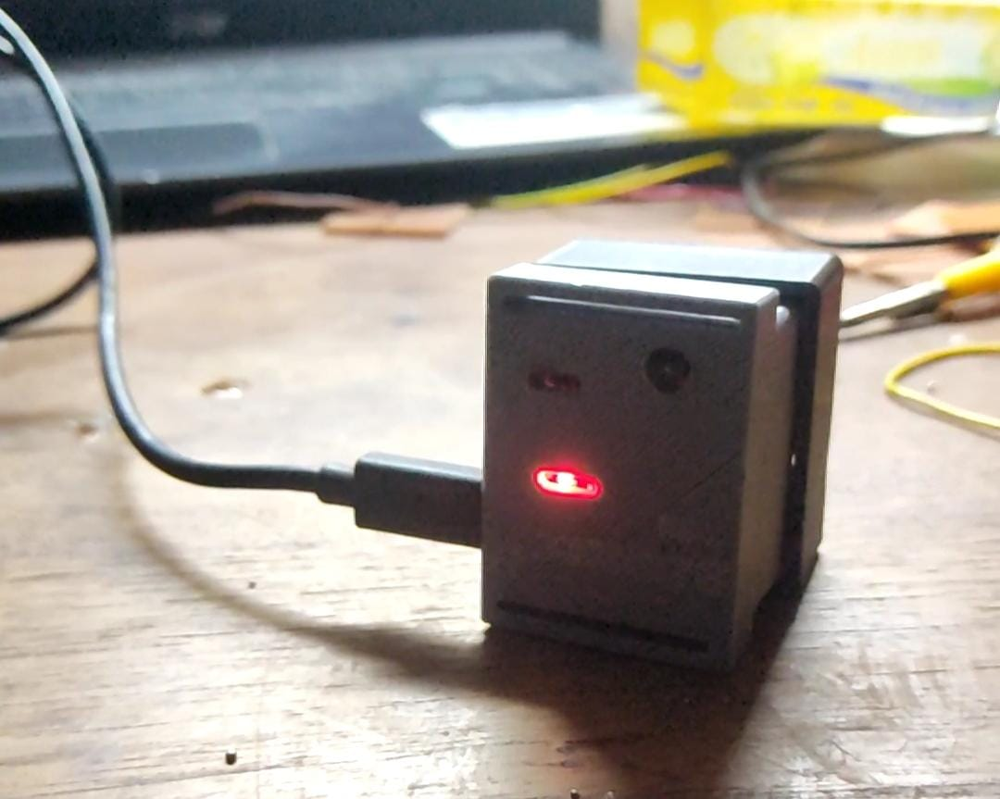
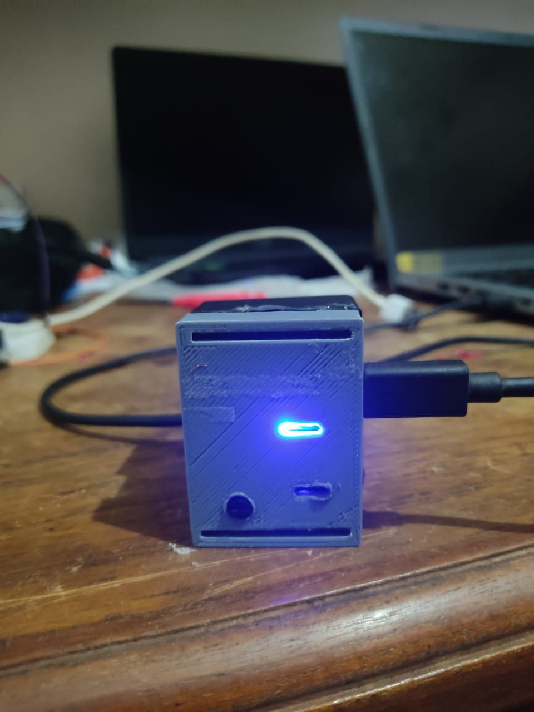
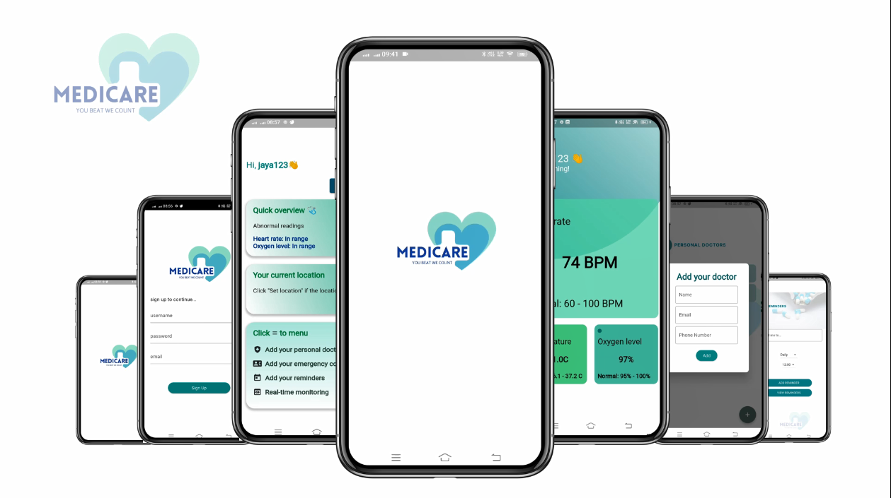

A complete hardware–software IoT system — a wrist-worn wearable device that monitors vital signs and dispatches emergency notifications in real time.
Monitoring heart rate regularly is important for everyone — especially senior citizens. Irregular heart rate can be an early sign of serious conditions, yet most people only check it occasionally. We built a wearable watch to make continuous monitoring effortless and to send alerts when something is wrong.
"I've noticed that my resting heart rate will be around 55 beats per minute when I first get up in the quiet early morning, but it will jump up into the 80s when I'm trying to get the kids to school on time. It's a direct reminder for me throughout the day to slow down and breathe." — Ronesh Sinha, M.D. (SutterHealth)
This perfectly illustrates how meaningful real-time heart rate data can be. Our system extends that awareness to people who need it most.
Controller
| Component | Purpose |
|---|---|
| ATMEGA328P | Main microcontroller — clocked with resistors and capacitors |
Sensors
| MAX30100 | Measures heart rate and blood oxygen level |
| LM35 | Measures body temperature |
Communication
| ESP8266 WiFi Module | Connects the device to the internet over WiFi |
Power
| 1000mAh Li-Po Battery | Powers the entire circuit |
| Micro USB 18650 Charging Board | Recharges the battery via USB cable |



This was a novel experience for all of us — not just another software module, but a complete hardware–software system built from scratch. Sensors reading data, a microcontroller orchestrating events, a separate WiFi module pushing data to the cloud, and an Azure server running our backend — all working together as one product.
This is the most ambitious project we built during our undergraduate years. It was our first time building a Flutter application, and our first time deploying to a cloud server. The journey was not easy — errors at every step taught us more than any textbook could. Each bug was a lesson.
From designing the 3D-printed casing to writing proper documentation, we went through the full product development cycle. That's what made it a brilliant learning opportunity — going far beyond just writing code or building a circuit, all the way to something you could put on your wrist.
Visit Project Page